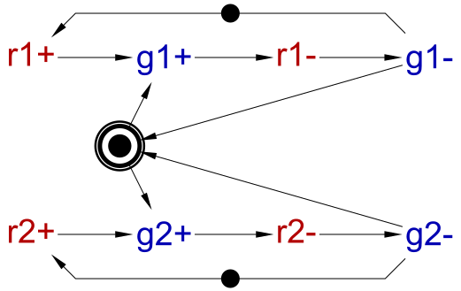
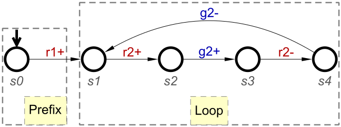
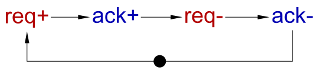
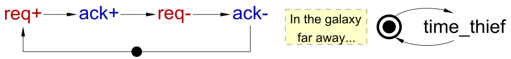

Table of Contents
Verification of temporal properties of asynchronous systems
This tutorial assumes the general familiarity with temporal properties verification and asynchronous design – ideally, you should have completed some of the synthesis and verification tutorials for asynchronous circuits.
Temporal properties
Temporal properties are used to reason about the behaviour of a system over time. An execution of a system can be represented as an infinite sequence of states, s0, s1, s2, …, and a temporal property is evaluated over this sequence. Typically a global system state has some structure – it comprises a finite number of Boolean entities, e.g. the state of a digital circuit comprises the values of its signals. Properties are normally formulated at the level of a module, and the property refers only to a small number of these entities, called atomic propositions.
The property itself would usually be an extension of Boolean formulae with temporal modalities (a.k.a. temporal operators), e.g. some condition is required to hold either always (i.e. in every state si), or eventually (i.e. in some state si), or until some other condition starts to hold. Note that there are two versions of until operator: strong_until expects its right hand side condition to become true eventually, i.e. it does not hold otherwise, even if its left hand side is always true; in contrast, weak_until can be satisfied if its right hand side is always false – in which case the left hand side should always hold. Note that temporal modalities can be nested, e.g. “always, eventually COND” expresses that condition COND will keep occurring and so will be true infinitely many times, and “eventually, always COND” expresses that condition COND will stabilise and hold from some point onwards. For example, the temporal property
always, if req then req strong_until req & ack
states that whenever signal req is 1, it will stay 1 until both req and ack are 1, which must eventually happen due to the semantics of the strong_until modality.
Suppose a temporal property depends on Boolean atomic propositions a1, a2, …, an (e.g. these can be the signals mentioned in the property – for the above property the atomic propositions are req and ack). Then the property can ‘observe’ only partial information about each state, viz. only the values of these atomic propositions, and one can abstract away all the other information from the states in the execution, in effect, replacing a sequence of states by a sequence of values of these atomic propositions – such a sequence still contains enough information to evaluate the property.
As each atomic proposition can be either “true” or “false”, there are 2n different assignments to them. For example, if the property mentions signals req and ack, but no other signals, there are 22=4 possible assignments:
req=0 req=0 req=1 req=1
ack=0 ack=1 ack=0 ack=1
One can think of the set of these assignments as an abstract finite alphabet, and an infinite string over this alphabet would represent an abstract execution of the system (with the irrelevant state information abstracted away).
Temporal properties vs. invariants
An invariant is a property that can be expressed as “always COND”, where COND is some Boolean formula over atomic propositions, i.e. contains no temporal modalities. Invariants are important in practice, and are much easier to specify and verify than general temporal properties. Workcraft offers special support for them, including the verification framework based on REACH language.
Workcraft offers several different kinds of verification:
- Standard properties which are applicable to many models or even many model types, e.g. deadlock-freeness of STGs or Circuits. Most of the standard properties are invariants.
- Custom invariants for a particular model, captured using REACH language, e.g. that PMOS and NMOS transistors must never be ON simultaneously to prevent a short-circuit in a buck, see Design of basic buck controller.
- Properties related to refinement – such properties have to be formulated for two models (often of a different kind), e.g. that a circuit model conforms to its environment that is an STG model. (This is implemented by converting the models to the same kind (e.g. STG), composing them, and verifying a complicated invariant of the composition.)
- Properties formulated on multiple models, e.g. N-way conformation of several STGs. (This is implemented by composing the models and verifying a complicated invariant of the resulting composition.)
Verification of temporal properties conceptually falls into the second category: While temporal properties is a major extension compared to REACH, there is some overlap in functionality, and so one has to understand the trade-offs when choosing which specification language is better suited to express a particular property. The considerations are as follows:
- REACH allows one to capture only invariants, i.e. one looks for a reachable state satisfying a certain ‘badness’ condition (e.g. a short-circuit), and the invariant one would like to prove is that no reachable state is ‘bad’ (i.e. the negation of the ‘badness’ condition is satisfied for every reachable state). Hence, if the property you are trying to express is not an invariant, i.e. you have to reason about sequences of states rather than individual states, then you have to use temporal verification.
- If the property you are trying to prove is an invariant then REACH should be preferred:
- it is more flexible for expressing this kind of properties (e.g. it allows one to refer to places and transitions of the STG, whereas temporal properties can only refer to signals);
- the verification is more efficient – not only the checking algorithm is more efficient for invariants, but also several invariants can be verified on the same unfolding prefix;
- the violation traces are finite and so much easier to debug.
Violation traces for temporal properties
Whenever a property is violated, a witness of the violation, in the form of a violation trace exhibiting the behaviour violating the property, is automatically computed and presented to the user to assist with debugging.
Temporal properties can be classified into:
- Safety properties: Intuitively, such properties state that ‘bad things’ never happen, and a violation of a safety property can be witnessed by a finite trace demonstrating a ‘bad thing’ happening. Note that invariants are a proper subset of safety properties – the violation trace then leads to a ‘bad’ reachable state where the invariant is not satisfied. Safety properties which are not invariants are possible but rare in practice.
- Liveness properties: Intuitively, such properties state that ‘good things’ (e.g. progress) eventually happen, and a violation of a liveness property can be witnessed only by an infinite trace. E.g. the violation of the property “eventually
COND” can only be witnessed by an infinite execution where conditionCONDis false in every state visited by this execution. - Hybrid properties combining safety and liveness: While such properties are possible, it is almost always a good idea to disentangle the safety and liveness aspects into separate properties.
For the sake of uniformity, we assume that violation traces are always infinite: For safety properties, any infinite extension of a finite violation trace is still a violation trace, and vice versa, any infinite violation trace has a finite prefix (that already shows the violation) such that any extension of that prefix to an infinite trace would yield a violation trace.
In systems with deadlocks, not every finite trace can be extended to an infinite one. While it is possible to extend the semantics of temporal properties to finite traces, it is not trivial, and for simplicity Workcraft just assumes that the system is deadlock-free – this should be formally verified prior to temporal verification.
Many tools have a limitation that the main mode of verification is “verification by simulation” (i.e. basically testing), and so they have to support finite traces as all simulated traces are necessarily finite. This approach has major limitations, in particular, it is impossible to catch a violation of any liveness property. In contrast, Workcraft focuses on formal verification and supports infinite traces and liveness properties.
In this tutorial we focus on finite state systems and the often used class of temporal properties corresponding to omega-regular languages – these are exactly the ones which can be recognised by Büchi automata; they correspond to the cores of Property Specification Language (PSL) and SystemVerilog Assertions (SVA) and strictly include Linear Temporal Logic (LTL). In this case, it turns out that if a property is violated, there must exist an infinite violation trace having a specific, lasso-shaped form, i.e. it is comprised of a finite prefix followed by a finite loop that is repeated infinitely many times. In contrast to general infinite traces, lasso-shaped traces have a finite representation, and temporal verification algorithms always search for lasso-shaped violation traces (and it is guaranteed that if a lasso-shaped violation trace does not exist then other violation traces do not exist either, i.e. the temporal property holds).
As an example, consider the following STG specifying the mutex protocol:  Furthermore, suppose the property one would like to verify is
always, if r1 then r1 strong_until r1 & g1
Without fairness assumptions (see below), this property is violated, and the violation can be shown by the following lasso-shaped infinite trace:

Intuitively, r1+ has fired, but g1+ is indefinitely pre-empted in favour of g2+.
Synchronous vs. asynchronous verification
Synchronous systems have one or more clock signals, and ‘interesting’ events, with few exceptions, happen at the rising or falling edges of these clock signals. In contrast, asynchronous systems do not have clocks (and so no rising or falling edges) – but there is still the notion of global discrete time that progresses (or ‘ticks’) whenever any event happens in the global system. Workcraft focuses mostly on asynchronous systems, so the latter semantics is used, which has several implications for specifying temporal properties.
The ‘global system’ is usually unknown at the time a particular module is being designed and the verification properties are being specified for it. Moreover, the ‘global system’ is subject to change due to changes in other modules, even if the way they interact with the module being designed stays the same. Furthermore, the ‘global system’ is a matter of viewpoint – it may always be considered a component of some encompassing system, all the way up to the whole Universe (and beyond, depending on your worldview). This means that temporal properties for the module being designed should tolerate any number of spurious ticks of the global time, i.e. ticks which are due to events invisible to the module being designed should not affect whether the property holds or not. Note that the property should tolerate not only added spurious ticks, but also removed ones: Indeed, if the value of the property changes when some spurious ticks are removed, then it would change back when these ticks are added back, i.e. it does not tolerate added spurious ticks either.
This ability to tolerate added or removed spurious ticks can be formalised in the notion of stutter-invariance, and is explained below.
Sensible properties of asynchronous systems must be stutter-invariant; in other words, it can be strongly argued that if a property of an asynchronous system is not stutter-invariant then it is not sensible, and an error should be reported to the user.
For example, consider the synchronous property
always, if req at the current positive clock edge then ack at the next positive clock edge
A naïve way of reformulating it in the asynchronous context would be,
always, if req at the current tick of global time then ack at the next tick
This property is clearly not stutter-invariant – if the property is satisfied for the module being designed, it may fail because a spurious tick may be added in the global system due to an invisible event in some far-away module that happened immediately after req had become true. Hence, an error should be reported if the user attempts to input this property. Otherwise, the property would hold for the module in isolation, but will fail at the system level – making it very difficult to understand and debug.
Safety properties which hold for a module in isolation but may fail for the overall system would indicate a serious problem in the verification setup! E.g. suppose you have verified some important safety property of your system, and then your system is used as a module in a bigger system (and one can always claim that any physical system is a module within the Universe). If the property is no longer guaranteed to hold, such verification is not very useful.
A formulation that tolerates spurious ticks could be
always, if req then eventually ack
However, this formulation is likely not capturing the engineer's intent correctly – note that it allows a request to withdraw before it is acknowledged, and any number of requests to be acknowledged by a single acknowledgement. The handshake protocol forbids the request to withdraw until it is acknowledged, and so a better formulation is
always, if req then req strong_until req & ack
Note that even though the original synchronous property was a safety property, these asynchronous re-formulations are liveness properties. This happened because in the asynchronous context one has to drop the rigid deadline for the arrival of req imposed by the clock signal, and, due to the nature of the interleaving semantics, one has to cope with an arbitrary number of unrelated concurrent events that the overall system can execute before req arrives. In other words, in the synchronous context, there is often (though not always) an implicit assumption that the clock signal is fair (i.e. its value will keep changing) – in the asynchronous context, the fairness is just made explicit.
Another issue stems from the interleaving semantics that is commonly used to represent concurrency in asynchronous systems. Suppose x is initially false, and we have a process without deadlocks that eventually sets x to true, and the property we would like to check is that indeed eventually x becomes true. Clearly, this property holds for this process in isolation. However, suppose the overall system includes also another process that does not interact with the former process and never changes x, just keeps executing some events.
If the system were synchronous, the property would still hold, as the clock period is selected so as to guarantee that every enabled event fires before the next clock tick. However, in an asynchronous system with the interleaving semantics for concurrent events, it is quite possible to execute events only from the latter process, perpetually ignoring the former process, i.e. an infinite trace containing events only from the latter process is a valid execution in the interleaving semantics, and the property is violated for this trace.
The whole purpose in life of formal verification is to find unlikely violation traces (likely ones can be found by cheaper techniques like simulation). So this unlikely violation must be found by a good tool!
In such a situation the designer may think this trace is a false alarm, as in “reality” it is impossible to perpetually prevent the former process from executing its events, or, in other words, the scheduling of concurrent events can often be assumed to be fair. However, this assumption is not made automatically by the tool, as it is invalid in some practical cases – some actions may happen but are not guaranteed to happen (e.g. arrival of an input, or a user's action), and so it would be reasonable to allow indefinite pre-emption for such actions. Hence, the tool must be explicitly told about the fair scheduling assumption as a part of property specification, as explained in the fairness section below.
Stutter-invariant properties
As explained above, after abstracting away the part of the state information that is invisible to the property, an execution of the system can be abstractly represented as an infinite string over the finite alphabet corresponding to the possible assignments to atomic propositions mentioned in the property. If the system makes a step that is not visible to the property, as it does not affect the values of its atomic propositions, the string will contain a consecutive repetition of the same letter, called stutter. That is, spurious ticks of global time are manifested as a stutter.
Two strings are stutter-equivalent iff they differ only by adding / removing some finite stutter. Let
aω be an infinite string obtained by infinite repetition of a, and ∼ be the stutter-equivalence. Then, e.g.:
aabbbcccdω ∼ aaaabbccdω ∼ abcdω
A property is stutter-invariant (SI) if for any pair of stutter-equivalent strings, the property holds on one of them if and only if it holds on the other. In other words, an SI property cannot distinguish between stutter-equivalent strings, i.e. it is oblivious to stutter (and so to spurious ticks of global time).
As famously argued by Lamport [1], and also explained above, sensible properties of asynchronous systems must be SI. Properties which are not SI are called stutter-sensitive – such properties may be suitable in synchronous context but are fragile in the asynchronous context as their evaluation is affected by “spurious” ticks due to invisible events in the global system and they may not survive composition, refinement, or even minor re-design (like inserting internal signals to resolve CSC conflicts in far-away modules).
For a given temporal property, it is possible to determine automatically whether it is SI or not. This is done by constructing an automaton and performing computationally expensive automata operations. In particular, for stutter-sensitive properties, it is possible to issue diagnostics in the form of two infinite lasso-shaped traces which are stutter-equivalent, but the property holds for one of them and is violated for the other. Unfortunately, this process completely destroys the syntactic structure of the property, making it difficult to identify an offending sub-formula.
An alternative approach is to identify a suitable syntactic fragment containing only SI properties. This would either:
- make it impossible to specify a stutter-sensitive property; or
- would provide some syntactic-level diagnostics about sub-formulas which may cause the violation of SI.
The former approach is possible for some simple logics, e.g. for Linear Temporal Logic (LTL) banning the ‘next’ operator results in an SI fragment. Unfortunately, for more complicated logics like Property Specification Language (PSL) or SystemVerilog Assertions (SVA) banning the ‘next’ operator is insufficient, and other restrictions (on the context in which operators can be used, rather than a complete ban) have to be imposed. Properties in such a syntactic fragment are called syntactically stutter-invariant (SSI). To summarise:
- every SSI property is guaranteed to be SI;
- there are properties, even sensible ones, which are SI but not SSI;
- SSI violation can be diagnosed efficiently, with useful syntactic diagnostics that may help to find the problematic sub-formula.
Note that one can get the best of both worlds using the following approach:
- perform the (efficient) SSI check;
- if the property is not SSI then perform the (slower) SI check;
- if the property is SSI or SI then proceed with verification;
- else output an error and the two kinds of diagnostics: A pair of traces (from the failed SI check) and syntactic-level diagnostics (from the failed SSI check) that may help the user to quickly identify the offending sub-formula.
Tips for writing SI properties
This section suggests a few rules of thumb for writing SSI properties.
Try to avoid SERE and ‘next’
When specifying properties of asynchronous systems, Sequential-Extended Regular Expressions (SERE) operators used at the Sequence layer of PSL and SVA are likely to be difficult to use correctly and in an SI manner, and temporal modalities are much more natural. Moreover, the temporal modality ‘next’ stating that its operand must hold starting at the next tick of the global time often leads to the violation of SI. Avoiding SERE and ‘next’ is enough to guarantee that the property is SI.
PSL and SVA allow to specify ranges for ‘always’ and ‘eventually’ modalities – the ranged versions of these operators are defined via ‘next’ and so may result in violation of SI too, unless the range is universal. Hence avoid the ranged versions of these operators.
However, there are practical cases where SERE and ‘next’ come useful, in particular for edge detection (see below). If properly used, a property using SERE and ‘next’ may still be SI.
Prefer overlapped suffix-implication and overlapped ‘followed by’ to their non-overlapped variants
In PSL and SVA, A |-> B is SI whenever A is Boolean or SI and B is SI, whereas A |=> B may still be non-SI even if these conditions hold. Hence using the ‘overlapped’ variants of these operators is more likely to yield an SI property. Note that ‘overlapping’ is also more natural in the asynchronous context, e.g. the request and acknowledgement must overlap in the handshake protocol.
Operator ##[i:j] in SVA
Apart from degraded cases, there are only a few ranges [i:j] which would result in an SI formula:
- 0:0, 0:1, 0:$ – it is then enough for both operands to be SI;
- 1:1, 1:$ – in addition to both operands being SI, further conditions are required;
- 2:$ – in addition to both operands being SI, further conditions are required which are unlikely to hold for practical properties.
Hence only former three ranges are well behaved, and you can occasionally get away with 1:1 and 1:$ in certain contexts (e.g. ##1 is somewhat similar to the ‘next’ temporal modality and can be used for edge detection, see below); all the other ranges are likely to yield a non-SI property.
Edge detection
In practice one often has to reason not only about statuses (e.g. values of signals) but also about events, i.e. signal edges. For example, properties like, “condition COND must hold whenever signal X switches from 0 to 1”, are common. The natural1) way of detecting an edge is to use the ‘next’ temporal modality, and following [2] we define for any formula A:
↑A := !A & next A – rising edge of A
↓A := A & next !A – falling edge of A
Unfortunately, using ‘next’ removes the guarantee of the property being SI, so one must be careful to ensure that the overall property is SI. [2] presents many useful SI patterns for edges, and more patterns can be found here. Below are several examples:
eventually, ↑A & B & next C
always, if ↑A then (B | next C)
(!↑A | B | next C) strong_until (↑D & E & next F)
(!↑A | B | next C) weak_until (↑D & E & next F)
Here A, B,…, F are arbitrary SI formulae (not just Booleans!), and these patterns still work if the rising edge is replaced with the falling edge. Note that many simplified sub-paterns can be obtained by substituting constants for A, B,…, F, e.g.
eventually, ↑A & B
eventually, ↑A & next B
always, if ↑A then B
always, if ↑A then next B
and many others. Furthermore, these patterns can be combined with each other and with any SI formulae using the Boolean operators and temporal modalities except ‘next’, while still guaranteeing that the resulting property is SI.
Fairness
It is often the case for asynchronous systems that liveness properties require some fairness assumptions to hold. There are two kinds of fairness assumptions:
- Weak fairness is related to fair scheduling of concurrent events, and states that if an event is enabled then it must eventually either fire or be disabled.
- Strong fairness is related to choices in the system, and states that if some option in a choice is enabled infinitely many times then it must be selected infinitely many times.
Fairness assumptions rule out some infinite traces as impossible (note that all finite traces are still possible under any fairness assumptions discussed below, so fairness assumptions are irrelevant for safety properties whose violations can be demonstrated on finite traces).
Fairness assumptions should not be made lightly: There are situations when they are unwarranted, and by making a fairness assumption (as a part of the property) the designer takes responsibility that it indeed holds – this requires a good understanding of the module and, sometimes, its environment.
Weak fairness
Consider a module specified by the following STG, and the temporal property
always, if req then req strong_until req & ack

Clearly, it is a liveness property that holds for this module in isolation. However, if the module is considered as a part of a bigger system that can execute other events (for simplicity, we assume that those events do not interact with the module in any way), the situation changes, as the following STG illustrates:

This STG has an extra transition time_thief modelling events external to the modue which do not interact with the module in any way, but, due to the peculiarity of interleaving semantics and the possibility of unfair scheduling, can steal all the system's time! This, in particular, means that the property becomes violated due to the possible trace req+ time_thiefω that indefinitely pre-empts enabled transition ack+ (recall that the purpose in life of formal verification is to find such unlikely traces).
In this particular case, it is likely that this trace cannot occur in reality (of course, this depends on the kind of system being modelled, and some justification is necessary – e.g. in case of circuits, ack is a signal computed by a logic gate, and logic gates and most latches, including MUTEX, have finite delays), and so the designer may want to declare this trace impossible in reality, and check the property only on other traces. This can be done by passing some extra knowledge about the fair scheduling of some events (in this case, ack+) as an assumption encoded as a part of the property.
Note that assuming fair scheduling of all events is usually a bad idea, e.g., in this case assuming fair scheduling for req+ would amount to a very bold statement about any possible environment the module can be deployed in (note that req+ is an input, i.e. produced by the environment; ack is an output computed by the module, so it is much better known); if req+ is produced in response to a user's action, or the module is intended for re-use, it is probably a bad idea: The trace time_thiefω may well be possible in some cases.
For asynchronous circuits and STGs, it is usually possible to assume weak fairness for transitions of internal signals and outputs: Logic gates and most latches cannot have infinite delays, and so they will eventually either fire or be disabled. Note that this is still true for the rising transitions of a MUTEX's grants – even though their delays are unbounded due to potential metastability, they are finite, and so eventually MUTEX will resolve metastability and one of the outputs will fire and the other will become disabled. In contrast, assuming weak fairness of an input transition requires good knowledge of the environment, and so one has to make such an assumption only on the case-by-case basis, and very carefully. Furthermore, one cannot automatically assume weak fairness for the output(s) of WAIT and other Asynchronous Arbitration Primitives, as these outputs are controlled by inputs from the external environment (e.g. the analogue part of the circuit); hence, one has to understand the environment very well to make such an assumption.
The assumption that a certain transition T is scheduled fairly is common, and there is a standard ‘incantation’ for expressing it as a temporal property defined as
weakly_fair(T) := always, eventually T is not enabled
Note that:
- It is assumed that
Tcannot fire and immediately re-enable itself (otherwise a more complicated formula is needed, which would somehow track whetherThas fired). - The formula refers to the enabledness of a transition – it may be difficult to express this in some cases, e.g. if atomic propositions correspond to the values of signals. In circuits, one can use the function computed by the gate or latch, and in STGs one can create additional atomic propositions to represent whether a place holds a token, or even directly the enabledness status of a transition.
Now, one can use the formula “weakly_fair(T)” as an assumption under which another property is checked, i.e. by putting this assumption on the left hand side of an implication, and the property on its right hand side. For example, the property discussed above, can be reformulated as
if weakly_fair(ack+) then
always, if req then req strong_until req & ack
Exercises
- A fire alarm contains a fire sensor that generates an event when it detects fire (which in turn triggers the alarm), and this event is initially enabled to express that the fire alarm is ready. Can one assume weak fairness of this sensor event?
- A coffee machine responds to the user pressing a button by making a cup of coffee. Is it reasonable to assume weak fairness for the button pressing event?
- An asynchronous hardware module
Mresponds to inputiby computing outputo. Part of the computation is delegated to another asynchronous moduleM′as follows:Msends a requestreq(that is an output ofMand an input ofM′) and waits for an acknowledgementack(that is an output ofM′and an input ofM), after which outputois produced. Is it reasonable to assume weak fairness ofackwhen verifyingM?
Strong fairness
In constrast to weak fairness that is concerned with fair scheduling of concurrent events, strong fairness is concerned with fair selection of options of a choice. Recall the MUTEX example considered above, with the liveness property
always, if r1 then r1 strong_until r1 & g1
This property is violated on the following trace:
Note that this trace enables g1+ infinitely many times, but never fires it – the other option of the choice, g2+, is always selected instead, and so g1+ is indefinitely pre-empted.
From physical considerations, one can argue that this violation trace is not possible in reality and should be ruled out during formal verification. Indeed, if r1+ has fired before r2- then waiting r1 will necessarily win next time, as it will have a sufficiently long window of opportunity (after r2-, the MUTEX will execute g2- and then wait for r2+, with the latter incurring at least one inverter's delay). In other words, it is reasonable to assume strong fairness for MUTEX's grants (unless the internal implementation of MUTEX is very biased/poor).
Fortunately, it is possible to exclude such unfair traces from consideration by passing some extra knowledge that a particular choice option (in this case, r1+) cannot be pre-empted indefinitely as an assumption encoded as a part of the property. The assumption that a certain transition T, that is an option of a choice, is selected fairly is common, and there is a standard ‘incantation’ for expressing it as a temporal property defined as
strongly_fair(T) := if always, eventually T is enabled then always, eventually T fires
Intuitively, this states that if T is enabled infinitely many times then it fires infinitely many times. Note that:
- One has to track somehow whether
Thas fired. In circuits and STGs this is usually not a problem as firing a signal transition changes the value of a signal, e.g. strong fairness ofg1+in our example can be expressed as, “if always, eventuallyg1+is enabled then always, eventuallyg1”. - The formula refers to the enabledness of a transition – it may be difficult to express this in some cases, e.g. if atomic propositions correspond to the values of signals. In circuits, one can use the function computed by the gate or latch, and in STGs one can create additional atomic propositions to represent whether a place holds a token, or even directly for the enabledness status of a transition.
Now, one can use the formula “strongly_fair(T)” as an assumption under which another property is checked, i.e. by putting this assumption on the left hand side of an implication, and the property on its right hand side. For example, the property discussed above can be reformulated as
if strongly_fair(g1+) then
always, if r1 then r1 strong_until r1 & g1
Exercise
- Suppose a vending machine dispenses an apple or a banana in response to the user pressing one of two buttons. Is it reasonable to assume strong fairness for the event of pressing the banana button?
Syntactic vs. Semantic aborts
Electronic circuits often have ‘disruptive’ operations like resets, aborts, interrupts, etc. However, temporal properties are often specified for the ‘normal’ mode of operation, and are not meant to hold during and across such disruptions. For example, the property
if weakly_fair(ack+) then
always, if req then req strong_until req & ack
becomes violated if a reset occurs after the request but before the acknowledgement.
Some properties, in particular invariants, are easy to re-write by taking disruptions into account – e.g. one can simply replace an invariant always COND by the invariant always, rst or COND, where rst is the reset signal. However, for more complicated temporal properties such re-writing often results in cumbersome formulae and is error-prone. Hence, special operators are used to handle disruptions, e.g. ‘abort’ in PSL, and ‘accept_on’ and ‘reject_on’ in SVA. For example, for a temporal property P, one can write P abort rst in PSL or accept_on(rst) P in SVA, to express that if rst is asserted during the execution and P has “not failed yet” then the overall property is considered to hold on this execution. For example, one can rewrite the above property as
if weakly_fair(ack+) then
always,
if req then req strong_until req & ack
abort rst
The definition of the ‘abort’ operator in PSL has changed from version 1.01 to version
1.1 of the standard: ‘Semantic’ aborts turned into ‘syntactic’ aborts, following the terminology of [3]. The difference is about at which point of time a temporal property P is considered to have failed and so no longer can be ‘rescued’ by an arrival of rst. For example, the property next false semantically fails before the first tick of global time, and so is equal to false and cannot be rescued, i.e.
(next false) semantic_abort rst = false semantic_abort rst = false
In contrast, next false syntactically fails after the first tick of global time, and so can be rescued, i.e.
(next false) syntactic_abort rst ≠ false syntactic_abort rst
Another example from [3] is the property
(always !p) & (eventually p)
that is a logic contradiction and so fails semantically before the first tick of global time; however, it never fails syntactically (as long as !p holds), as one can always keep waiting for the eventuality.
Hence, syntactic aborts have some rather pathological and counterintuitive behaviour, in particular, equivalent properties (i.e. those holding on the same infinite executions) may cease to be equivalent in the context of a syntactic abort. This has implications for formulae simplification – e.g. simplifying next false to false is no longer possible as it may occur as a sub-formula in a property with a syntactic abort.
Unfortunately, while semantic aborts do not have such pathologies, they are computationally much more expensive, especially if nested [3], which motivated the change of the PSL standard. Nevertheless, Workcraft uses “good old” semantical aborts.
Temporal modalities referring to the past
Workcraft does not currently support any temporal modalities referring to the past. However, there is a general result [4] that properties with such modalities do not add any expressive power, i.e. references to the bounded past (i.e. when there is a starting point and no time prior to that) can always be eliminated. This may be computationally expensive and lead to a blow up in the size of the property; however, in practical properties, references to the past are usually used in a very restricted context and can be easily eliminated.
For example, consider the property, “always, if ack then previously req”. A violation trace for this property would have a (perhaps empty) prefix where req is false, followed by a state where ack is true, followed by any infinite continuation. (At this point one should realise that the violation can be demonstrated by a finite trace, i.e. this is a safety property, but not an invariant, which is rather unusual – one may start suspecting that there is something wrong with the formulation, see the discussion below.) So one can capture the negation of this property as “!req strong_until ack”, and so the property itself is equivalent to “!(!req strong_until ack)”, which does not refer to the past. This can be simplified by removing the double negation to “!ack weak_until req & !ack”.
Note that this property is (probably) not what one had intended to express, as it allows:
- the request to withdraw prematurely, e.g. the property holds on the trace
req&!ack !req&!ack !req&ack …; and - multiple acknowledgements for the same request, e.g. the property holds on the trace
req&!ack req&ack !req&ack !req&!ack !req&ack !req&!ack !req&ack …, which makes the property rather easy to satisfy – it effectively just states that the first request occurs before the first acknowledgement, ignoring all the subsequent occurrences.
Hence one would probably want to modify the property to fix the above problems, which makes expressing it as a temporal property non-trivial. Moreover, using temporal verification is an overkill in this case – one can see that the fixed property is an invariant and so can be expressed in REACH – this is how Workcraft's Hanshake Wizard verifies handshakes.
Before trying to express a property as a temporal formula, think whether its violation can be seen on a finite trace. If so, this is a safety property, and sensible practical safety properties are usually invariants and so you are likely to be better off using REACH. Furthermore, this thinking process would help you understand your property better.
For example, for the above property, chances are that you are trying to capture the requirement that transitions of req and ack follow the sequence … req+ … ack+ … req- … ack- … (where … does not have any occurrences of req and ack), and this can be captured as the following reachability-like property:
!req & !ack:req-, ack+, ack-must be disabled;req & !ack:req+, req-, ack-must be disabled;req & ack:req+, ack+, ack-must be disabled;!req & ack:req+, req-, ack+must be disabled.
This can be easily captured in REACH. The Hanshake Wizard tutorial lists some other properties which should be verified for handshakes, in particular the receptiveness conditions.
Solutions
Download all the Workcraft models discussed in this tutorial here: Temporal Verification Models (11 KiB)
===== Feedback =====
- As discussed in https://www.dokuwiki.org/plugin:include#controlling_header_size_in_included_pages, by default, the headers in included pages start one level lower than the last header in the current page. This can be tweaked by adding an empty header above the include:\\
====== ====== {{page>:tutorial:feedback&inline}} - For offline help generation the content of
feedbackpage should be temporary wrapped in<WRAP hide>. Note that the headers still propagate to the table of contents even if inside the hidden wrap. Therefore the Feedback title needs to be converted to something else, e.g. to code by adding two spaces in front.